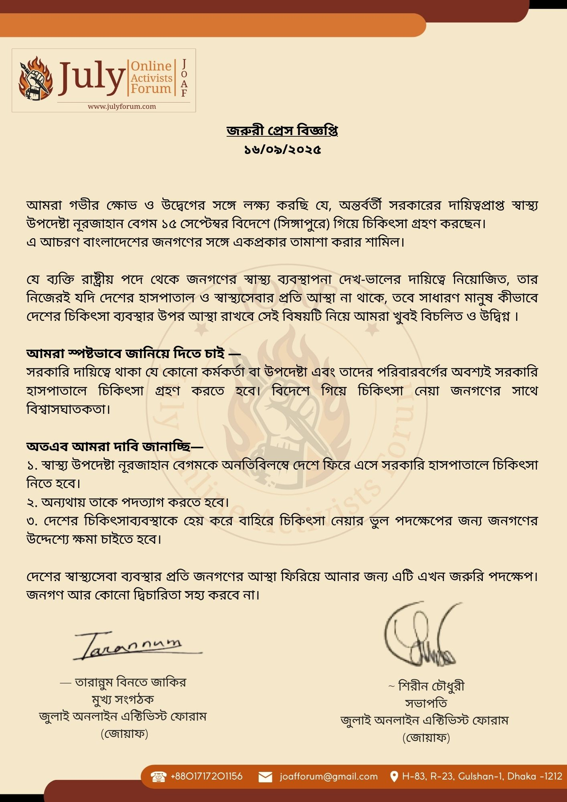

JOAF লোড হচ্ছে...
JOAF লোড হচ্ছে...
ঢাকা, ১৬ সেপ্টেম্বর ২০২৫

আমরা গভীর ক্ষোভ ও উদ্বেগের সঙ্গে লক্ষ্য করছি যে, অন্তর্বর্তী সরকারের দায়িত্বপ্রাপ্ত স্বাস্থ্য উপদেষ্টা নূরজাহান বেগম ১৫ সেপ্টেম্বর বিদেশে (সিঙ্গাপুরে) গিয়ে চিকিৎসা গ্রহণ করছেন।
এ আচরণ বাংলাদেশের জনগণের সঙ্গে একপ্রকার তামাশা করার শামিল। যে ব্যক্তি রাষ্ট্রীয় পদে থেকে জনগণের স্বাস্থ্য ব্যবস্থাপনা দেখ-ভালের দায়িত্বে নিয়োজিত, তার নিজেরই যদি দেশের হাসপাতাল ও স্বাস্থ্যসেবার প্রতি আস্থা না থাকে, তবে সাধারণ মানুষ কীভাবে দেশের চিকিৎসা ব্যবস্থার উপর আস্থা রাখবে সেই বিষয়টি নিয়ে আমরা খুবই বিচলিত ও উদ্বিগ্ন।
আমরা স্পষ্টভাবে জানিয়ে দিতে চাই—
সরকারি দায়িত্বে থাকা যে কোনো কর্মকর্তা বা উপদেষ্টা এবং তাদের পরিবারবর্গের অবশ্যই সরকারি হাসপাতালে চিকিৎসা গ্রহণ করতে হবে। বিদেশে গিয়ে চিকিৎসা নেয়া জনগণের সাথে বিশ্বাসঘাতকতা।
অতএব আমরা দাবি জানাচ্ছি—
দেশের স্বাস্থ্যসেবা ব্যবস্থার প্রতি জনগণের আস্থা ফিরিয়ে আনার জন্য এটি এখন জরুরি পদক্ষেপ। জনগণ আর কোনো দ্বিচারিতা সহ্য করবে না।
সংস্থা সম্পর্কে:
— তারান্নুম বিনতে জাকির
মুখ্য সংগঠক
জুলাই অনলাইন এক্টিভিস্ট ফোরাম
(জোয়াফ)
~ শিরীন চৌধুরী
সভাপতি
জুলাই অনলাইন এক্টিভিস্ট ফোরাম
(জোয়াফ)